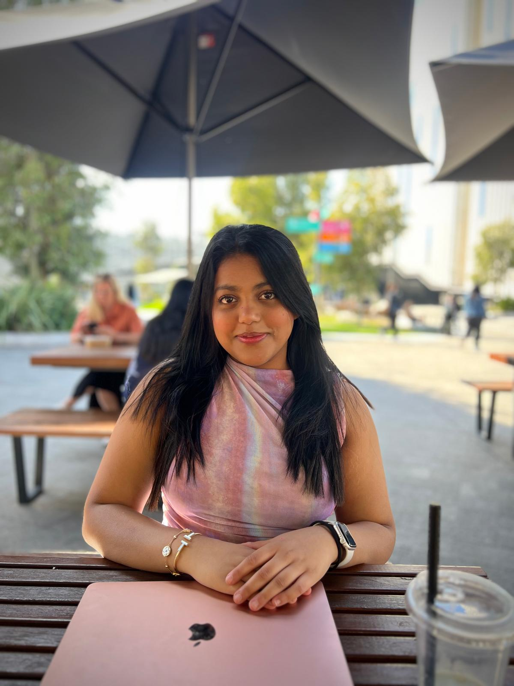

Business Analytics Student · Aspiring Data Analyst
"I enjoy turning data into insights that support better business decisions."

I am a third-year Business Analytics student at Deakin University with a strong interest in data-driven decision making, business intelligence, and market analytics.
Throughout my degree, I have developed analytical and technical skills in areas such as data analysis, SQL, machine learning, and business strategy. I enjoy working with data to uncover patterns, generate insights, and help organisations make informed decisions.
I have worked on several industry-focused projects involving market research, predictive analytics, and strategic analysis — applying Python, SQL, Excel, and data visualisation tools to real-world business problems.
Exploring new technologies in data analytics and AI. Passionate about event design and management, music and DJing, fashion and lifestyle trends, and maintaining a strong focus on fitness and wellness.
My goal is to work as a Business Analyst or Data Analyst, helping organisations use data to improve decision-making and identify new opportunities. Particularly interested in consulting, finance, technology, and retail analytics.
I'm open to internship opportunities, graduate roles, and collaborations in business analytics, data analysis, and consulting. Feel free to reach out — I'd love to connect!